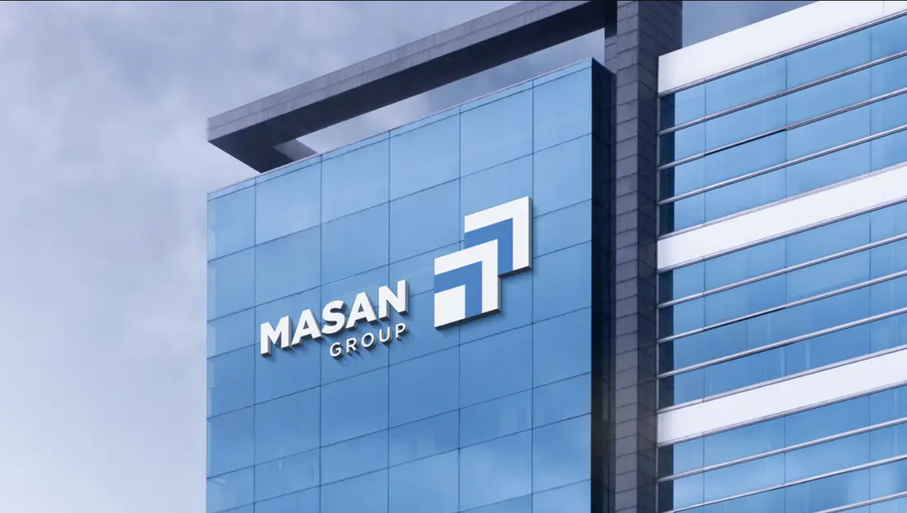
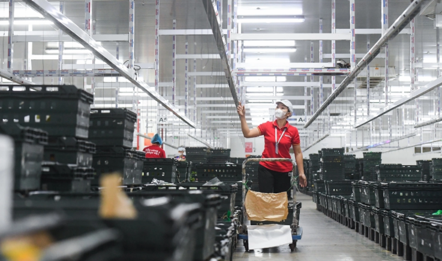
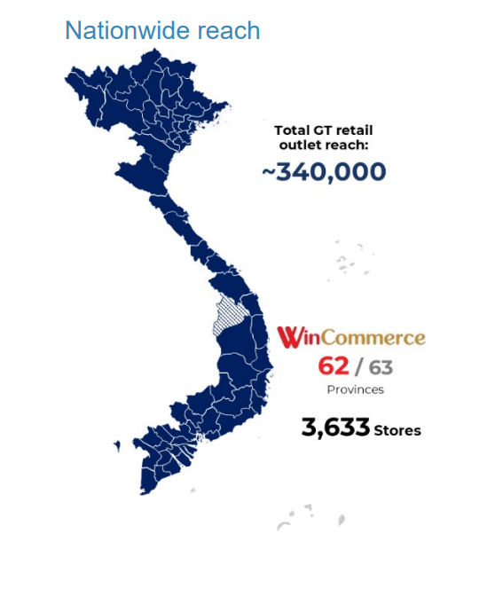
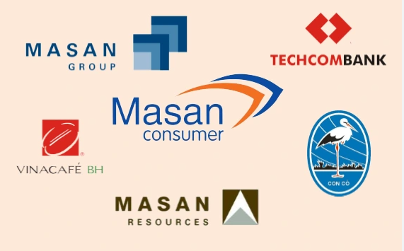

About Masan Group – WinCommerce
Supply chain background and business context for designing the SCM Information System.
About Masan Group
Vietnam’s leading FMCG & retail corporation with an integrated consumer ecosystem.
- Operates across FMCG manufacturing, retail, logistics, and digital consumer services.
- Focuses on building a “Point-of-Life” platform combining food, beverages, and essential services.
- Invests heavily in supply chain infrastructure and digital transformation.
About WinCommerce
Operator of WinMart & WinMart+ nationwide retail network within Masan’s ecosystem.
- Manages thousands of supermarkets and minimarts across Vietnam.
- Handles daily replenishment of fresh food, FMCG, and private-label products.
- Acts as Masan’s main retail channel connecting manufacturers with end consumers.
Retail Supply Chain Overview
Network of suppliers, DCs, hubs, and WinMart/WinMart+ stores serving urban and rural markets.
- Multi-tier structure: suppliers → DCs/ hubs → stores and online channels.
- Mix of ambient, chilled, and frozen supply chains with different service requirements.
- High frequency deliveries to maintain freshness and product availability.
Current Challenges
Fragmented systems, manual workflows, and limited visibility across the retail network.
- Data scattered across warehouse, transport, purchasing, and store systems.
- Many planning and control tasks still rely on spreadsheets or offline communication.
- Difficulty tracking performance by SKU, store, route, and supplier in real time.
Why SCMIS?
A unified SCM Information System to optimize WinCommerce’s retail supply chain.
- Centralizes operational data from WMS, TMS, OMS, and supplier systems.
- Automates workflows such as order generation, routing, and replenishment.
- Provides dashboards and alerts to support faster, data-driven decisions.
- Supports Masan Group’s long-term digital transformation strategy.